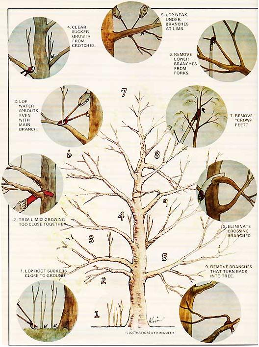

"You don't have to be a graduate tree surgeon to improve the appearance, yield, and general health of an apple tree," says Richard Korst of Samuels, Idaho. "In fact, anyone with some shears and a pruning saw-and some common sense-can handle the job."
Whether you want to restore vigor to that aging apple tree in the backyard, ensure the success of a recently planted sapling, or increase the yield of a whole orchard . . . you'd do well-especially now, while the sap's down and the leafless branches are easy to see-to explore the advantages you can derive from a little judicious tree pruning.
Few things are as beneficial to a fruit tree as regular pruning. A properly trimmed tree is not only more pleasing to the eye than its untrained counterpart, but can yield moreand better fruit AND live a healthier life . . . all of which adds up to money in your pocket.
And speaking of money, tree pruning is a marketable skill that can pay your bills if you live anywhere near commercial orchards. (As a traveling tree pruner, I find it profitable every year to trek 300 miles from the woods of northern Idaho to the lush orchards of central Washington!)
The main tools you'll need to do a good pruning job are: a small pruning saw, a saw mounted on a pole (for reaching those high, thick branches), hand loppers (lopping shears), and pole loppers (for topping and high work). You'll find these items at most large nursery and garden supply outlets.
In case you've ever wondered, a pruning saw differs from a carpenter's saw in two ways: [1] the pruning saw has coarser, thicker teeth that are less likely to bind up than an ordinary saw's, and [2] it's made to cut-usually-on the pull stroke. Each of these features can be a definite advantage when you're working atop a ladder or a branch and you can't afford to lose your balance.
You can prune at any time of year, although a great deal of cutting in early spring may cause excessive loss of sap. The owners of commercial apple orchards usually do their trimming in the winter, when they have time for the job and when tree outlines are most distinct. (No pruning is performed, however, when the temperature falls below 20° F, as such frigid conditions can cause dieback in trimmed limbs.)
On the other hand, if you intend to work with long-neglected trees, you can spot dead limbs and branches more easily when the tree is still bearing leaves . . . which is to say, in the summer.
Summer's also the time to check unwanted sucker growth (see illustration). These unproductive shoots usually arise from old cuts, limb junctions (crotches), or mots near the tree's base. Although they're easily pulled out the first time they appear, such shoots-once established-must be nipped with loppers or sawed off. (Hint: When you cut away a sucker, leave as little stub behind as possible . . . as with any pruning cut. This'll not only prevent recurrent sucker growth but promote proper healing of the wound.)
Begin by removing dead wood, which only invites insect and fungal growth (and-ultimately-heart rot), from your tree or trees. You can-and probably should-dress large cuts with a special paint made for the purpose (see your garden shop), or with ordinary, non-leaded, oil-base exterior paint.
Once you've trimmed away all dead tissue, look for crossing limbs. (On older trees, you may have to sort out whole whorls of tangled branches.) Such a "mare's nest" is undesirable, since the limbs-if they rub-can scrape each other's bark and damage fruit, and since the growth of too many branches in one place tends to tie up the tree's energy (thereby limiting the amount and size of its fruit). The remedy is to remove one or the other of any crossing limbs.
If the tree's getting too tall or too wide, don't hesitate to cut it back. The usual practice when training young trees is to nip the tips of most branches back one-third to one-half the previous year's growth. (You can determine yearly growth-after the first year of pruning-by closely observing the segments on the branches.) This not only promotes the development of heavier branches but controls any spreading or reaching tendency. (If you cut back into older wood, however, you may severely limit-or altogether stop-new growth.)
It's generally a good idea-when you remove excess branches from a major limb or large branch-to leave intact those shoots that come off the sides (although even these quite often need to be thinned). On the other hand, under branches-arising from the bottom of a limb or branch-are usually weak and should be removed . . . as should branches that grow out of the tops of others (the exception being when the growth in question is at the end of a branch).
Upward-growing branches often get out of hand and drain too much energy from a main limb. Such growths-called water sprouts-can ruin the form of a tree by reaching up into higher branches, where they cause rubbing, entanglement, and general chaos. Hence, they should be nipped.
Finally, remove any branches that grow back toward the center of a tree, as these wayward growths tend to limit the light so necessary to the proper ripening of fruit.
Adequate light is so important that, until not too many years ago, experienced pruners deliberately shaped apple trees into a vase-like form: completely open in the center, with several main boughs emanating from one point a few feet high on the trunk. Experience, however, has shown that such trees are weak and tend to split easily . . . and when they do split, a main limb (in other words, a large percentage of the tree) is lost.
Consequently, most training is now of the "central leader" type. I've heard this method described as "trying to make an apple tree look like a Christmas tree" . . . and-except for the fact that the ornaments arrive a little early-it's an apt description.
The central leader is nothing more than the main branch that grows straight upward in the middle of the tree. Seeing to it that this bough remains the leader takes a considerable amount of care. Usually this means nipping it very little (certainly less than any side branches), so as to promote its growth.,,
Branches that emerge laterally from the central leader should be spaced a few inches apart, and spread around the trunk. (That is, they should not occur two-in-a-row, one right on top of another.)
It's also usually a good practice to eliminate "crow's feet"-or forks-from the ends of all branches. This is especially important in the case of the central leader, which mustn't be allowed to choke itself off in a short, fan-shaped spray.
This piece, of course, is by no means intended to be a definitive treatise on the subject of tree pruning. (For that, you'll have to refer to Plant Pruning in Pictures by Montague Free, available for $6.95 from any good bookstore or MOTHER'S Bookshelf.)
Nonetheless, if you apply the basic rules I've set down here, you should find yourself next summer with a yard or orchard full of stronger, more beautiful, and healthier apple trees . . . each of which could easily be loaded with an extra bushel or two of juicy red-or yellow-splotched bounty.
The way I see it, pruning is one gardening idea that can't help but bear fruit!
Never attempt to prune a large tree singlehanded. Limbs are often heavier than they appear . . . and if one gets out of hand, it could easily cause severe property damage and/ or personal injury. Also bear in mind that a misstep while climbing a tall tree-or a momentary loss of balance while making a cut-can lead to disaster.
If you have any doubts about your ability to trim a tree, seek the services of a professional. (Look under "Tree Service" in the Yellow Pages.) A tree surgeon's fee may be high . . . but the alternative might be a $100-a-day (or more) expense during along stay in the hospital.
|
 |
|
|